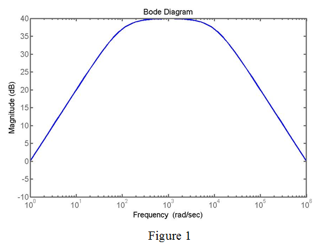

Step 1:
Refer to Figure 1.23 and 1.24 in the textbook.
Consider a voltage amplifier of transfer function,
The transfer function is a result of STC low pass and high circuits.
Consider the DC gain is  .
.
The low pass circuit transfer function is .
The cutoff frequency is .
The high pass circuit transfer function is .
The cutoff frequency is  .
.
Step 2:
Determine the gain of the Bode plot for the transfer function.
Take logarithm on both sides.
Step 3:
Plot the magnitude plot varying frequency.

Step 4:
From Figure 1, determine the magnitude gain at different frequencies.
Table 1
|  | |
| | 20 |
|  | 37 |
| | 39.9 |
| | 36.9 |
| | 19.9 |
| | 0.088 |
| | -20 |
Step 5:
From Table 1, the maximum value of gain is .
Cut off frequency is obtained at which the magnitude is less than 3 dB from the maximum value.
Determine the gain at cut off frequency.
Step 6:
From table 1, at the frequency is  and for the frequency is .
and for the frequency is .
From table 1, determine the Bandwidth of the amplifier.
Therefore, the bandwidth is .